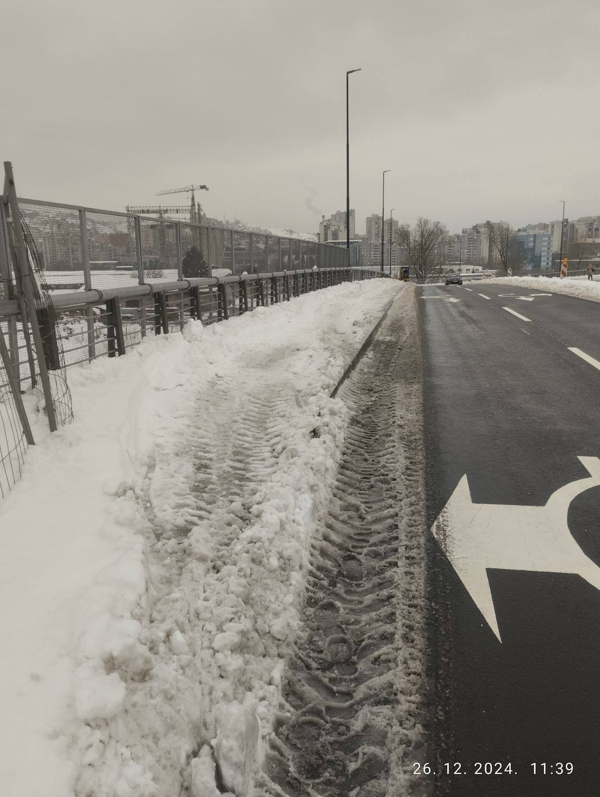

NOVOSTI
-
01.01.2025.
SRETNA NOVA GODINA 2025! 🎉🎄 Dragi pripadnici Mjesne zajednice Alipašin Most I, Neka vam Nova godina donese obilje zdravlja, sreće, i uspjeha! ğŸ•Šï¸ Neka zajedništvo i prijateljstvo budu temelj svakog našeg uspjeha u budućnosti. 💫 Zajedno gradimo bolje sutra! 🌟 Sve najbolje od srca, Vaša mjesna zajednica 💙
-
26.12.2024.
Od početka sniježnih padavina, 22.12.2024. godine iako je ugovorom zimsko održavanje IX transferzale u nadležnosti KJKP "Rad", ista nije očišćena od snježnog prekrivača. Danas u toku dana od strane Općine Novi Grad Sarajevo angažovano je JP "Lokom" koje je očistilo pješačke staze/trotoar kako bi se omogućilo sigurno i bezbjedno kretanje pješaka. Ovim putem se zahvaljujemo Općini i JP "Lokom".
-
23.12.2024.

Kada je u pitanju zimsko održavanje na području MZ "Alipašin Most I" dana 23.12.2024. godine nije na zadovoljavajućem nivou. Ulica Smaila Š ikala nije ćišćena od kada su počele padavine. S obzirom da je to ulica kojom saobraća javni gradski prevoz, otežano je kretanje kako vozačima tako i pješacima. Molimo KJKP "Rad" da se aktiviraju i pošalju ekipe na teren kako bi se izvrsilo čišćenje.
-
11.12.2024.
OBAVJEŠ TENJE Poštovani, Obavještavamo vas da će se godišnjica zločina nad djecom Sarajeva, gdje je ubijenom troje djece iz našeg naselja: Admir Holjan, Aldin Alihodžić i Denis Bašović, obilježiti u ponedjeljak 16.12.2024. godine u 10:00 sati u ulici Potur Š ahidijina broj 1.
-
02.12.2024.

U toku dana završeni su radovi na privremenom asfaltiranju preostalog dijela saobraćajnice od kružnog vijadukta IX transferzale prema ulici Smaila Š ikala. Takođe je postavljena zaštitna ograda za kretanje pješaka ispod zgrade, kafića pa prema ulazu u OŠ . Mole se građani da ne pomjeraju ogradu i parkiraju vozila ispred kafića, kako bi pješaci, odnosno učenici škole taj put koristili na putu prema školi.
-
20.11.2024.
Poštovani građani, Obavještavamo vas da je pristupni put prema Ambulanti Alipašin Most I, izgrađen sa dvije saobraćajne trake iznad mezarja u kraju ulice Smaila Šikala. U predhodnim danima iscrtana je horizontalna i vertikalna saobraćajna signalizacija, te postavljeni saobraćajni znakovi o zabrani parkiranja vozila u oba smjera. Molimo vas da poštujete saobraćajne znakove, kao i da ne parkirate svoja vozila na saobraćajnici.